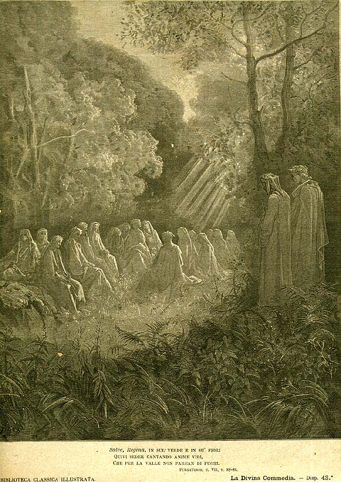

Песнь 7 из 33
Долина государей

Кратко
Узнав, что перед ним сам Вергилий, Сорделло благоговейно вызывается быть провожатым, но предупреждает: ночью вверх идти нельзя — без света не подняться. Он ведёт поэтов в благоуханную цветущую ложбину — Долину государей, где пребывают земные владыки, при жизни поглощённые властью и нерадевшие о душе. Сорделло называет их: Рудольф Габсбург, Оттокар, Филипп III, Педро Арагонский, Карл Анжуйский, Генрих III Английский и другие, нередко с горьким словом об их недостойных наследниках.
Главные моменты
- Правило горы: с заходом солнца восхождение невозможно (нет благодатного света).
- Цветущая, благоухающая Долина государей — мягкий, почти райский уголок.
- Галерея монархов, поглощённых земной властью.
- Сквозной мотив: великие отцы — и выродившиеся сыновья.
Значение
Свет и время как условие восхождения; земная слава власти ничтожна перед судьбой души.